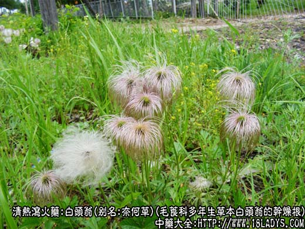
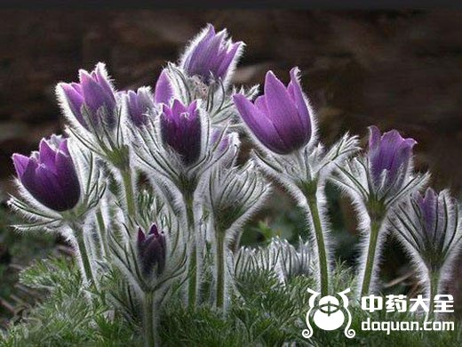
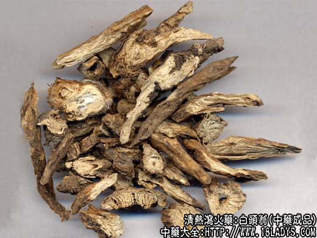
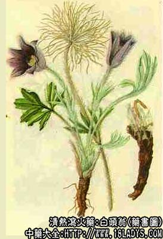

白头翁为较常用中药，《神农本草经》列为下品。历代本草记述及目前全国各省使用的商品极不统一，原植物来源也较复杂，京津两市习用品为毛莨科植物白头翁的根，下面中药师宁宁和大家了解下白头翁图片植物以及中药材。

白头翁图片 植物

白头翁花根茎的图片

白头翁图片 中药材

别名：奈何草、粉乳草、白头草、老姑草、菊菊苗、老翁花、老冠花、猫爪子花。
来源：为毛莨科多年生草本植物白头翁的干燥根，野生。
产地：主产于河北、辽宁、安徽、内蒙、山西、河南、陕西、吉林等省。
植物形态：多年生草本，高10~40厘米。全株密被白色较长柔毛。主根圆锥形，外皮黄棕色，基生叶丛生有长柄。叶片三山，小叶2~3分裂。花茎由叶丛中抽出，1~3枚，高10~40厘米。花单一顶生，花被6片呈两轮排列，花兰紫色。瘦果多数密集成头状。每一瘦果的顶端，有羽毛状宿存花柱，长达6厘米，蓬松如白发，故名白头翁。
性状鉴别：呈圆锥形扭曲不直，有的呈扁片状有多数裂隙，形态不一。尖端往往已被折断长约5~20厘米，直径约0.5~1.5厘米。表面黄棕色或黄褐色，粗糙形如枯朽之木柴。表皮税落处显网状花纹。根头部有叶基残留，层层包裹，内部叶基外壁及芽痕生有丝绒样白色柔毛。质坚实而脆。易折断。断面黄白色。气微香味微苦。以根条均匀，质地坚实者为佳。
主要成分：含原白头翁素，皂甙等。
主要作用为止痢解毒，现已证实其作用为：
1、抗阿米巴原虫草。白头翁煎剂能抑制阿米巴原虫草生长，有效成分为皂甙。委陵菜对阿米巴滋养体有杀灭作用。
2、抗滴虫。粉剂在试管内能杀灭阴道滴虫。
此外，还有抗真菌和抗细菌（对绿脓杆菌、金黄色葡萄球菌）的作用。
炮制：切片，生用。
性味：苦、寒。
归经：入胃、大肠经。
功能：凉血、清热、解毒。
主治：热毒血痢，温疟，血衄，痔疮出血等症。治阿米巴痢疾有特效。
临床应用：主要用于治疗阿米巴痢疾，即湿热毒痢，大便有脓血或纯血，腹痛，肛门灼热，里急后生，兼有发热。治细菌性痢疾也有效。可单用，更常是配秦皮、黄连、黄柏同用，方如白头翁汤。对产后血虚下痢，可再加甘草、阿胶，即白头翁加甘草阿胶汤。
使用注意：白头翁虽然对急性，慢性阿米巴痢疾者都有良好效果，但如下痢已久，元气已衰，脾胃欠佳者不要用白头翁，必需用时也要在白头翁汤基础上，再加党参、白术。
用量：3～12g。
处方举例：白头翁汤（《伤寒论》）：白头翁9g，黄连6g，黄柏3g，秦皮6g，水煎服。
注：据《中药志》第一册白头翁项下记述，各地所售白头翁，据文献及收集到地样品，约20种以上。又据1972年出版的《中药鉴别手册》第一册白头翁项下记述，仍存在混乱现象，摘抄如下：甘肃地区使用地产的毛莨科植物大火草和野棉花根作白头翁。中南、西南、华东及内蒙（锡盟）地区使用蔷薇科委陵菜的根或带根全草作白头翁。河南、安徽、江苏、江西、广东、广西，使用蔷薇科翻白草作白头翁。内蒙（巴盟呼市）河南，陕西（个别地区），江苏（盐城南通淮阴），湖南（零陵衡阳），使用菊科植物漏芦的根作白头翁。云南使用菊科植物毛大丁草的根或全草作白头翁。
据《药学学报》四卷1期25页，6卷5期265页“中药白头翁的生药学鉴定研究”一文考症，认为“唐本草”所述与目前广大地区使用的毛莨科植物白头翁相符。药用白头翁应以此种为主。又据《中药志》第一册白头翁项下记述，自从发现白头翁对阿米巴痢疾有特效后，各地相继对其进行深入研究，据报告由于植物来源不一，对阿米巴痢疾，有的有效。混同使用难于保证疗效。这种混乱情况应注意纠正。
了解更多清热解毒的中药，为您推荐↓↓↓↓